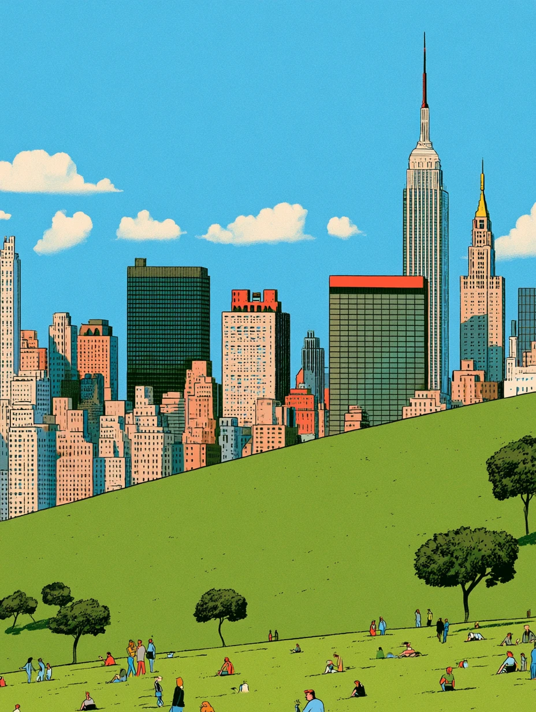

then you’ll see · Page 20
Between Sundays
Printed.
The middle of nowhere just got a new name.
A man on the run spent one night on open ground with a stone for a pillow. What he said when he woke up renamed the place — and started this newspaper.

A man left Beersheba in a hurry. He was not on vacation. His brother wanted him dead, and the fastest road out of town was the one he took.
Around sunset he reached a stretch of open ground between towns. The Bible does not give it a name. It just says a certain place — the kind of spot nobody stops in unless the sun quits on them first. He found a stone, put it under his head, and slept in the dirt.
What happened next is the reason this paper exists. He dreamed of a stairway set on the earth with its top reaching to heaven, and heard a promise that followed him for the rest of his life: I am with you, and will keep you, wherever you go.
He woke up afraid and said a strange thing for a man alone in a field: “Surely the Lord is in this place, and I was not aware of it.” Then he stood his pillow up on its end, poured oil on it, and gave the empty ground a new name: the house of God.
The place did not change overnight. His information did. Continued on Page 14 →
Inside today
How to read this paper
Read it. Skim it. Tear out the middle. Leave it somewhere on purpose. Play the games. Come back next Sunday.